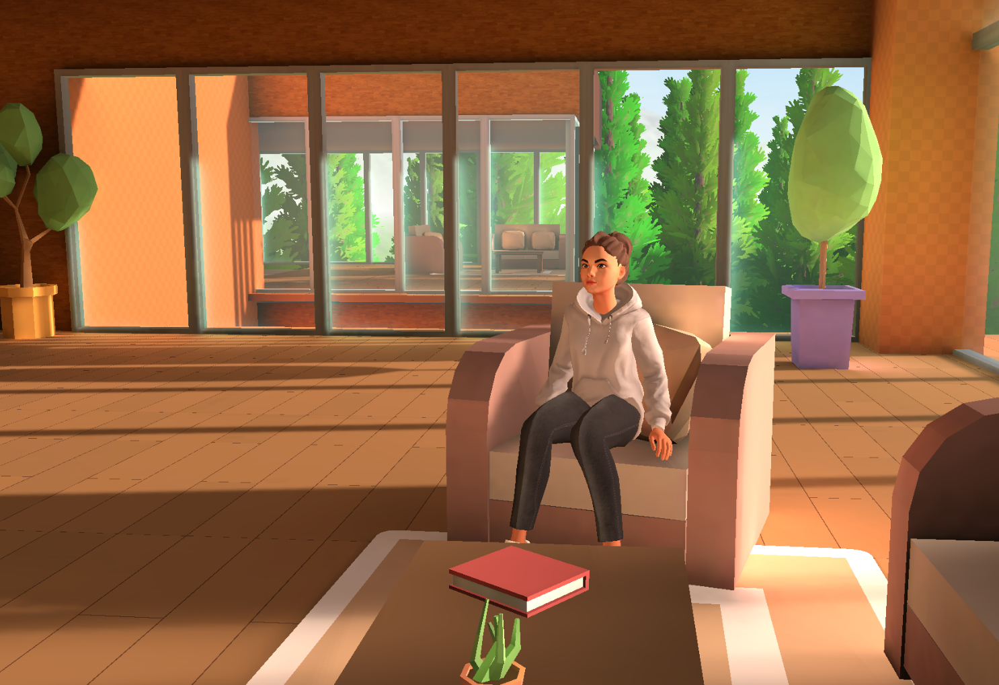
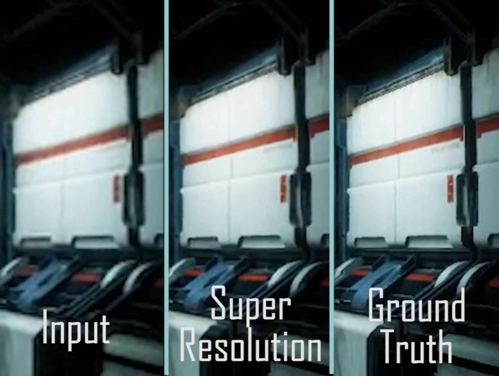
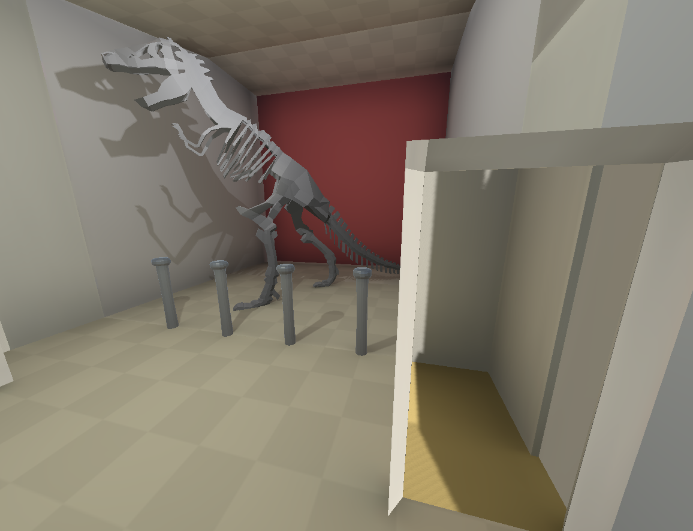
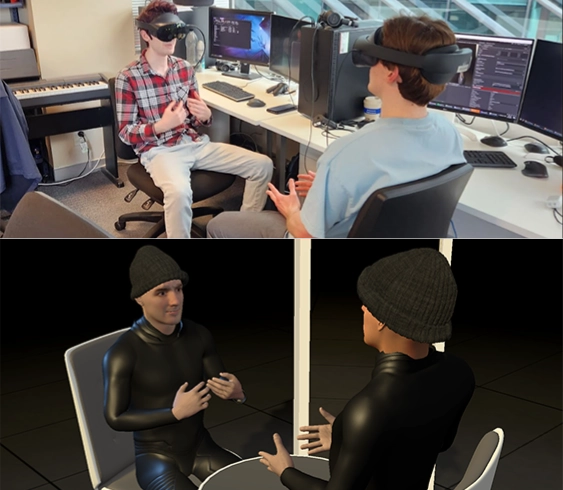
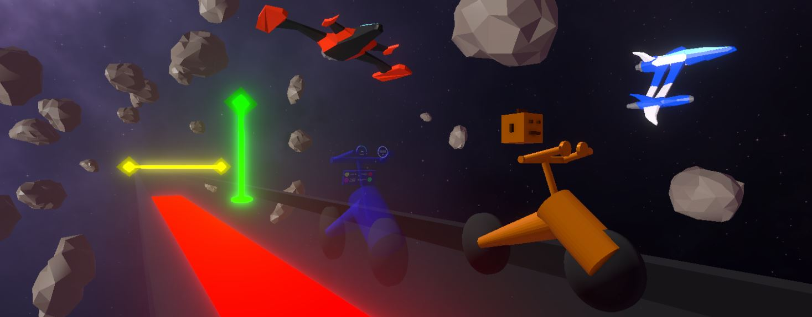
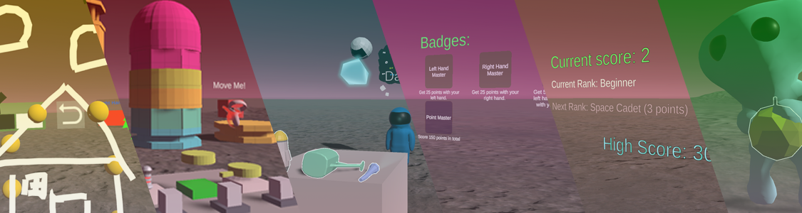

Embodied Conversational Agents
A VR prototype that lets you talk with an AI avatar on a mobile headset. I worked on the dataset and literature review.
Project details →I study how people move, talk and recognise one another in virtual worlds. My projects range from a virtual museum you can walk through in a small room to face-tracked avatars for social VR.
Open to XR Research Engineer, AI/XR Engineer, and Technical R&D opportunities.

A VR prototype that lets you talk with an AI avatar on a mobile headset. I worked on the dataset and literature review.
A VR prototype that lets you talk with an AI avatar on a mobile headset. I worked on the dataset and literature review.
Project details →
I built the training dataset for a stereo upscaling pipeline, capturing colour, depth and motion vectors from Unity scenes.
Data collection code ↗
A non-Euclidean museum fits a long walk into a small tracked space. I used it to study how redirected walking affects episodic memory.
Museum source code ↗Recent work in HCI, social VR, and embodied interaction.

In press · CHI 2026 Extended Abstracts (Poster)
Exploring how personalised, face-tracked avatars shape identity expression and social presence in social VR.
Virtual Worlds 4 (3), 39

ACM CHI PLAY 2024

IVCNZ 2023 · First author
XR communities in Cambridge, Auckland and beyond.
I have been heavily involved in the ICXR community, joining the executive team in 2023 and serving as the President in 2025.
Learn more about ICXRI was one of the Co-Founders and hosts of the RealityX Hackathon, the first XR and AI hackathon based in Cambridge, UK.
Learn more about the RealityX HackathonI have been heavily involved in the student XR club scene, leading the Cambridge University AR/VR Society and the University of Auckland's VR Club.
Learn more about the Cambridge University AR/VR Society Learn more about the University of Auckland's VR Club